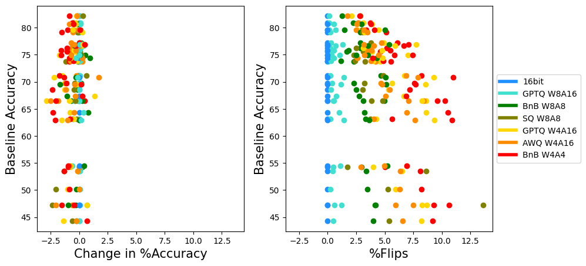
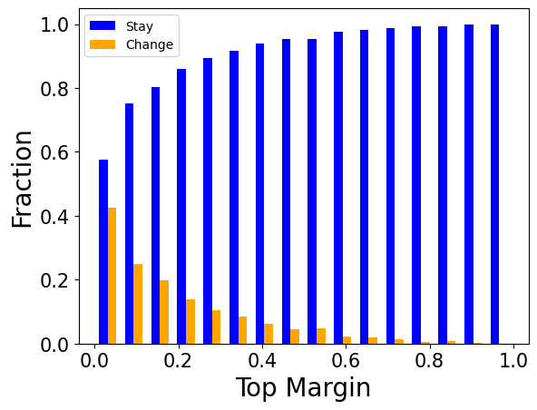
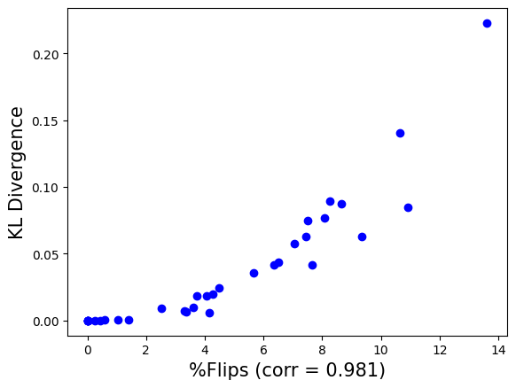

Two students both score 47 out of 100 on the same exam. Their averages match, but they may have gotten different questions right. Accuracy only compares the totals. Flips compare the answer sheets question by question, and KL compares how confident each student was on every option.
두 학생이 같은 시험에서 둘 다 100점 만점에 47점을 받았다고 하자. 점수는 같지만, 맞힌 문제는 다를 수 있다. 정확도는 총점만 비교한다. flips는 답안지를 문항별로 대조하고, KL은 선택지마다 각자 얼마나 확신했는지를 비교한다.
The finding in one figure한 장으로 보는 발견
Accuracy barely moves; the answers do. Left, accuracy change stays near zero; right, the same runs spread to double-digit flips. Only GPTQ W8A16 stays close.
정확도는 거의 안 움직이는데, 답은 움직인다. 왼쪽의 정확도 변화는 0 근처에 모이고, 오른쪽에서는 같은 실험이 두 자릿수 flips까지 퍼진다. GPTQ W8A16만 가깝게 남는다.

- Define two distance metrics.거리 지표 두 개를 정한다.Flips count correct→wrong plus wrong→correct changes; KL is averaged over every token of every answer option.flips는 정답→오답과 오답→정답 변화를 합쳐 센다. KL은 모든 선택지의 모든 토큰에 대해 평균한다.
- Test widely.넓게 시험한다.Five Llama2/Yi chat models, six quantization schemes plus three pruning methods, ten tasks including MT-Bench.Llama2/Yi 대화 모델 다섯 개, 양자화 여섯 가지와 가지치기 세 가지, MT-Bench를 포함한 과제 열 개.
- Explain, then validate.설명하고 검증한다.A "top margin" analysis explains the cancelling; flips are checked against KL and generation quality."top margin" 분석으로 상쇄를 설명하고, flips를 KL 및 생성 품질과 대조한다.
Key idea: accuracy is a net count핵심: 정확도는 순증감이다
Accuracy reports the net change; flips report the gross traffic. On the same axis, the accuracy bars are slivers and the flip bars are 6–14× longer.
정확도는 순증감을, flips는 오간 총량을 보여 준다. 같은 축에 놓으면 정확도 막대는 가늘고 flips 막대는 6~14배 길다.
Why the flips cancel outflips가 상쇄되는 이유
Unsure answers are the ones that move, and wrong answers are usually unsure. Top margin is the probability gap between the best and second-best option; compression noise swaps them when it is small.
확신이 낮은 답이 움직이는데, 틀린 답은 대개 확신이 낮다. top margin은 1등과 2등 선택지의 확률 차이이고, 이 차이가 작으면 압축 잡음이 둘을 뒤바꾼다.

Results결과
Flips are a cheap stand-in for distribution distance, which averages can't see. Flips rise with KL; perplexity, another average, stays flat as the output falls apart.
flips는 분포 거리를 싸게 대신하는 지표이고, 평균 지표는 그 거리를 못 본다. flips는 KL과 같이 오르고, 역시 평균인 perplexity(평균 예측 불확실성)는 출력이 무너져도 그대로다.

In free-form generation the gap shows. At near-equal MMLU accuracy the 70B model loses MT-Bench points; the fewest-flips variant loses least.
자유 생성에서는 차이가 드러난다. MMLU 정확도가 거의 같아도 70B 모델은 MT-Bench 점수를 잃고, flips가 가장 적은 변형이 가장 덜 잃는다.
| Scheme방식 | Δ acc | flips % | MT-Bench |
|---|---|---|---|
| 16-bit | 63.17 base | — | 7.431 |
| GPTQ W8A16 | −0.01 | 0.26 | 7.225 |
| BnB W8A8 | −0.55 | 3.32 | 7.059 |
| GPTQ W4A16 | −0.45 | 4.26 | 6.801 |
| AWQ W4A16 | −0.76 | 4.05 | 6.937 |
| BnB W4A4 | −0.78 | 5.65 | 7.018 |
When a compressed or distilled model replaces a larger one, report flips and KL to it next to accuracy. Drift starts at low-top-margin tokens, a natural place to spend extra bits, rank, or distillation signal.압축·증류 모델이 큰 모델을 대신한다면, 정확도 옆에 그 모델 대비 flips와 KL을 함께 보고하자. drift(원본에서 멀어짐)는 top margin이 낮은 토큰에서 시작하니, 추가 비트·랭크·증류 신호를 쓸 자리다.
A measurement paper with no fix. Flips use first-token multiple-choice answers, and the link to real harm rests on GPT-4-judged MT-Bench, where the order isn't strict (BnB W4A4: more flips than GPTQ W4A16, higher score). Models are 2023-era Llama2 and Yi.해결책 없는 측정 논문이다. flips는 객관식 첫 토큰 답으로 재고, 실제 피해와의 연결은 GPT-4 채점 MT-Bench에 기대는데 순서가 엄밀하지 않다(BnB W4A4는 GPTQ W4A16보다 flips가 많지만 점수는 높다). 모델은 2023년 세대 Llama2와 Yi다.